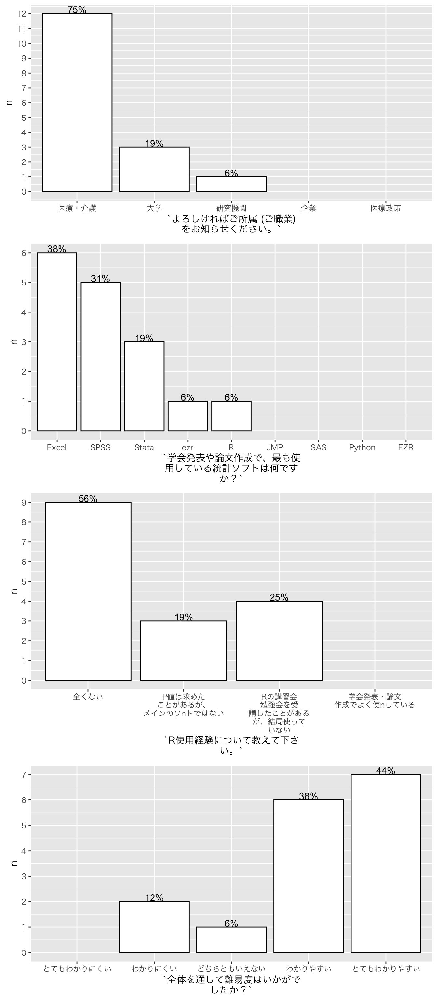
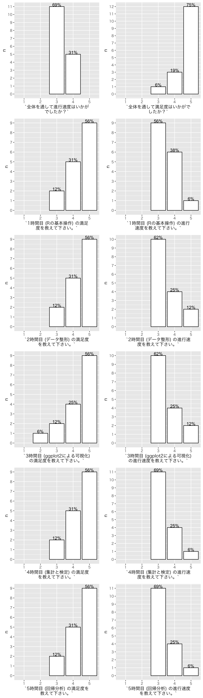

1 結果1
## [1] "アンケート回答者人数: 16"## [1] "アンケート回収割合: 64%"

2 結果2
2.1 今回の講義で学べてよかったことを教えて下さい。
## [1] "データ整形"
## [2] "解析の流れ"
## [3] "基本がわかってとても良かったです。"
## [4] "Rの使い方自体がよくわかった"
## [5] "rdsの使い方"
## [6] "実際の統計回析の手法を学べた"
## [7] "基本動作のやり方"
## [8] "初心者でもできそうと思えた。覚えたら他のソフトより簡単かもしれないと思った。"
## [9] "R、RStudioの実習を通して、統計解析の全体像を学べました。"
## [10] "Rの使い方がよく分かりました。ありがとうございます。\n\n"
## [11] "慣れればRが使いやすいソフトであること"
## [12] "＜ー ％＜％ など"
## [13] "基本をきっちりおさえることができました"
## [14] "基本的なところを教えていただいて自分で学ぶための下地をしっかり作れました"
## [15] "R toolのダウンロード\n“”で囲むかはヘルプを見て考える\nFunctionはヘルプを見てどこに何を入れるかを考える\n"
## [16] "とっかかりとしてよかったです、ありがとうございました"2.2 今回の講義でわかりづらかったところを教えて下さい。
## [1] "なし"
## [2] "集計のところ"
## [3] "特にありません。"
## [4] "特になし"
## [5] "なし"
## [6] "細かい記号はわかりにくいですが使いうちに慣れると思います"
## [7] "生存解析"
## [8] "進行が早いと何のために何をやっているかわからなくなる。"
## [9] "講義内容が盛りだくさんなため、ひとつひとつを理解する前に、講義が先に進んでいき、ついていけないことが少なくなかったです。"
## [10] "PC の調子が良くなくてついていかれない点がありました。いろいろお世話になりました、ありがとうございます。"
## [11] "コマンドの入力に慣れるまでが大変だった"
## [12] "特になし"
## [13] "自分でいじってみてまた聞きたいところが出てきそうです"
## [14] "コマンドの意味"
## [15] "ディレクトリの話。結構つまづくので少し解説いただけるとありがたいです"
## [16] "回帰"2.3 上記の「わかりづらいところ」に関して、改善点があれば教えて下さい。
## [1] "なし"
## [2] "もう少し課題があれば実践的でよかった"
## [3] "特にありません。"
## [4] "特になし"
## [5] "１日の講義にしてもう少しゆっくり目にしていただけるとよりありがたいです。"
## [6] "特にありません。"
## [7] "次回の講習で。"
## [8] "スクリプトの目的や意味の説明が繰り返しあるといい。"
## [9] "時間的にもう少し余裕が有るとありがたい。"
## [10] "予習の時間をもう少し下さい。"
## [11] "もう少し時間に余裕があると良い"
## [12] "なし"
## [13] "また第二回を"
## [14] "各コマンド毎に\n穴抜きで他に応用できるような説明があるとよかったです\n例えば、ここを変えれば他にも応用できます、など"
## [15] "Rでのディレクトリ指定や変更、今どこにあるのか"
## [16] "時間をほ増やす"2.4 今日の範囲以外で学びたいことがあれば教えて下さい。（ex. 傾向スコア）
## [1] "生存時間"
## [2] "傾向スコア また是非やってほしい"
## [3] "傾向スコア、area under the curve、生存曲線、便利な機能"
## [4] "GEE"
## [5] "なし"
## [6] "Kaplan-Meier曲線の作成など"
## [7] "傾向スコア、生存解析"
## [8] "傾向スコア、生存時間解析、マルチレベル解析"
## [9] "特にありません"
## [10] "傾向スコアをお願いします。"
## [11] "傾向スコア"
## [12] "元データ表作成、入力のコツなど"
## [13] "生存解析、競合リスク、機械学習"
## [14] "三群の比較"
## [15] "データクリーニング 傾向スコア"
## [16] "ロジスティクス回帰を詳しく知りたいです"